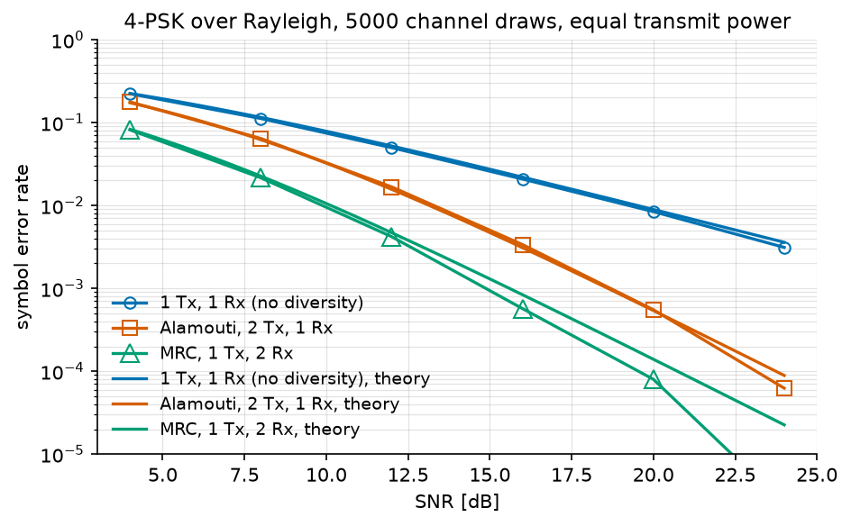

Alamouti Space-Time Coding Tutorial#
This tutorial explains what a space-time code buys, on the simplest and most widely deployed one: the Alamouti scheme.
Note
Before you start. MIMO Chain Tutorial introduced the multi-antenna channel and its detectors, all of which assumed the receiver knows the channel and the transmitter does not. This tutorial asks what the transmitter can do without that knowledge.
What you’ll learn:
Why a fading channel is limited by its deep fades, not by its average.
What spatial diversity is, and how maximum ratio combining obtains it.
How the Alamouti code obtains it from the transmitter instead.
How to measure the diversity gain, and the 3 dB it costs.
This tutorial is suited for engineers and students learning about MIMO systems, combining practical examples with theoretical background.
The Rayleigh Channel#
Over a flat Rayleigh channel, the received signal is
The coefficient \(h\) is a circularly symmetric complex Gaussian, so its squared modulus \(\gamma = |h|^2\) is exponentially distributed with unit mean:
The instantaneous signal-to-noise ratio is \(\gamma \, \bar{\gamma}\) where \(\bar\gamma = 1/\sigma^2\) is the average one. In other words, fading amounts to multiplying the SNR by a random variable, and the receiver is limited not by the average of that variable but by the probability that it is nearly zero:
We start with the imports and the parameters, QPSK over a Rayleigh channel:
"""Rayleigh fading, receive diversity, and the Alamouti space-time code.
Run from this directory: it writes the tutorial's figures into
../../docs/tutorials/.
"""
import matplotlib.pyplot as plt
import numpy as np
from comnumpy import monte_carlo, print_data, style
from comnumpy.core import Sequential
from comnumpy.core.generators import SymbolGenerator
from comnumpy.core.mappers import SymbolDemapper, SymbolMapper
from comnumpy.core.metrics import compute_ser, compute_ser_rayleigh_psk
from comnumpy.core.processors import Amplifier
from comnumpy.core.utils import Constellation
from comnumpy.core.visualizers import plot_error_rate, plot_iq
from comnumpy.mimo.channels import AWGN, FlatMIMOChannel
from comnumpy.mimo.coding import SpaceTimeDecoder, SpaceTimeEncoder, get_code
from comnumpy.mimo.detectors import LinearDetector
from comnumpy.mimo.utils import rayleigh_channel
style.use()
img_dir = "../../docs/tutorials/img/"
constellation = Constellation("PSK", 4)
M = constellation.order
code = get_code("alamouti")
power = 1 / np.sqrt(code.n_tx) # split the power over the antennas
Let us check the law on draws from
rayleigh_channel():
# --- the fading channel ----------------------------------------------
# One Rayleigh coefficient is a complex Gaussian, so its squared modulus
# is exponential with unit mean: the instantaneous SNR is the average one
# multiplied by that draw.
rng = np.random.default_rng(0)
gain = np.abs(rayleigh_channel(20000, 1, rng=rng).ravel()) ** 2
grid = np.linspace(0, 6, 200)
fig, ax = plt.subplots(figsize=(7, 4))
ax.hist(gain, bins=80, range=(0, 6), density=True, alpha=0.5,
label="20 000 draws of $|h|^2$")
ax.plot(grid, np.exp(-grid), lw=2, label=r"$e^{-\gamma}$, exponential(1)")
ax.set_xlabel(r"channel power gain $|h|^2$")
ax.set_ylabel("probability density")
ax.set_title("a Rayleigh channel is a random SNR")
ax.legend()
ax.grid(True, alpha=0.4)
plt.tight_layout()
plt.savefig(f"{img_dir}/one_shot_alamouti_fig1.png")
for threshold in (0.1, 0.01):
print(f"P[|h|^2 < {threshold:g}] = {np.mean(gain < threshold):.4f} "
f"(1 - exp(-{threshold:g}) = {1 - np.exp(-threshold):.4f})")

P[|h|^2 < 0.1] = 0.0925 (1 - exp(-0.1) = 0.0952)
P[|h|^2 < 0.01] = 0.0083 (1 - exp(-0.01) = 0.0100)
The histogram follows the exponential law, and one channel in a hundred is more than 20 dB below its average. Since the error probability is roughly the probability of such a fade, it decays only as \(1/\mathrm{SNR}\) – one decade of error rate for ten decibels, which is a poor exchange.
Spatial Diversity#
The remedy is to observe the same symbol through \(d\) independent fading coefficients. All of them must then be small at once for the link to fail:
The exponent \(d\) is the diversity order, and it is the slope of the error curve on a log-log plot.
Maximum ratio combining (SIMO)#
With one transmit antenna and \(N_r\) receive antennas, the observation is \(\mathbf{y}[n] = \mathbf{h}\,x[n] + \mathbf{b}[n]\) with \(\mathbf{h} \in \mathbb{C}^{N_r}\). The optimal receiver weights each branch by the conjugate of its own coefficient and sums:
This is maximum ratio combining (MRC). The output SNR is proportional to \(\sum_i |h_i|^2\), a sum of \(N_r\) independent exponentials, hence a diversity order of \(N_r\). Note that the expression above is exactly the pseudo-inverse of a column vector, so zero forcing on an \((N_r, 1)\) channel is MRC – one detector covers both.
Diversity is easy this way, but it requires antennas at the receiver, which is the expensive side: antennas are cheap on a base station and costly on a handset.
Space-time coding (MISO)#
Obtaining the same diversity from \(N_t\) transmit antennas is harder, because the transmitter has no channel knowledge. Sending the same symbol from both antennas gives \(y = (h_1 + h_2)x + b\), and \(h_1 + h_2\) is a single Gaussian coefficient: no diversity at all.
The Alamouti scheme spreads two symbols over two antennas and two time slots:
the first column being the first time slot and the second column the second. With one receive antenna and a channel \(\mathbf{h} = [h_1, h_2]\) constant over the two slots, the receiver observes \(y_1 = h_1 s_1 + h_2 s_2 + b_1\) and \(y_2 = -h_1 s_2^{*} + h_2 s_1^{*} + b_2\). Conjugating the second equation makes the pair linear in \((s_1, s_2)\):
and the equivalent channel is orthogonal:
That single identity is the whole scheme. The two symbols do not interfere, so the maximum-likelihood detector is not a search but a matched filter, and each symbol comes out with its SNR multiplied by \(|h_1|^2 + |h_2|^2\) – the sum of two independent fadings, hence diversity order 2. The code carries two symbols in two slots, so its rate is 1 symbol per channel use: the diversity costs no bandwidth, and no feedback.
Note
comnumpy stores every space-time code by its linear dispersion
matrices, \(\mathbf{G}(\mathbf{s}) = \sum_k \mathbf{A}_k s_k +
\mathbf{B}_k s_k^{*}\), and builds the equivalent channel from them. The
orthogonality identity above is checked when the code object is created,
so a code that declares itself orthogonal and is not cannot be used at
all.
Implementation#
One channel draw, one chain, transmitter to decision. The scaling by \(1/\sqrt{N_t}\) matters for the comparison that follows: two antennas each transmitting \(|s|^2\) would spend twice the power of a single antenna, a 3 dB advantage that has nothing to do with coding. Splitting the power keeps the comparison about diversity alone.
# --- one shot ---------------------------------------------------------
# One channel draw, one chain, transmitter to decision: what Alamouti
# combining does to a single receive antenna.
H_one = rayleigh_channel(1, 2, seed=42)
one_shot = Sequential([
SymbolGenerator(M, name="tx"),
SymbolMapper(constellation),
Amplifier(power),
SpaceTimeEncoder(code),
FlatMIMOChannel(H_one, name="channel"),
AWGN(sigma2=0.2, name="noise"),
SpaceTimeDecoder(code, H=H_one, name="detector"),
Amplifier(1 / power),
SymbolDemapper(constellation),
], taps=["tx", "noise", "detector"], name="Alamouti 2x1")
one_shot.seed(7) # every stochastic block, reproducibly
s_rx = one_shot(500 * code.n_symbols)
print(f"\none-shot SER: {compute_ser(one_shot.tap('tx'), s_rx):.4f}")
one_shot.summary(500 * code.n_symbols)
received = one_shot.tap("noise")[0]
combined = one_shot.tap("detector") / power
fig2, (ax_left, ax_right) = plt.subplots(nrows=1, ncols=2, figsize=(9, 4.2))
plot_iq(received, marker=".", ax=ax_left)
ax_left.set_title("tap('noise'): the single receive antenna")
plot_iq(combined, reference=constellation, ax=ax_right)
ax_right.set_title("tap('detector'): after Alamouti combining")
plt.tight_layout()
plt.savefig(f"{img_dir}/one_shot_alamouti_fig2.png")
one-shot SER: 0.0600
# block id output shape dtype time ms
0 SymbolGenerator tx (1000,) int64 0.03
1 SymbolMapper symbol_mapper (1000,) complex128 0.00
2 Amplifier signal_amplifier (1000,) complex128 0.01
3 SpaceTimeEncoder space_time_encoder (2, 1000) complex128 0.06
4 FlatMIMOChannel channel (1, 1000) complex128 0.01
5 AWGN noise (1, 1000) complex128 0.05
6 SpaceTimeDecoder detector (1000,) complex128 0.08
7 Amplifier signal_amplifier_2 (1000,) complex128 0.00
8 SymbolDemapper symbol_demapper (1000,) int64 0.06
The shape column is the code at work: 1000 symbols enter, the encoder spreads
them over (2, 1000) – two antennas, one thousand channel uses, so rate 1
– one antenna receives, and 1000 symbols come back.

The left panel is what the single receive antenna sees: two superimposed streams plus noise, with no constellation visible. The right panel is the same run after combining, and the four QPSK points are back. Nothing was estimated to get there – only the two conjugations and the matched filter of the equations above.
Monte Carlo Evaluation#
Averaging over fading takes many channel draws, and the draws are a batch: the same 5000 realizations serve every SNR point, one draw per row. Each scheme is one chain, built once with its stack of channels – the channel block propagates draw \(k\) on frame \(k\), and the detector holds the same stack:
# --- averaging over fading --------------------------------------------
# The SAME K channel draws serve every SNR point: one draw is one row
# of the batch (D51), each chain is built once with its stack -- the
# channel block propagates draw k on frame k, the detector holds the
# same stack -- and only the noise moves along the sweep.
K = 5000
n_symbols = 80
rng = np.random.default_rng(3)
H_siso = rayleigh_channel(1, 1, rng=rng, size=K)
H_alamouti = rayleigh_channel(1, 2, rng=rng, size=K)
H_mrc = rayleigh_channel(2, 1, rng=rng, size=K)
siso = Sequential([
SymbolGenerator(M, name="tx"),
SymbolMapper(constellation),
FlatMIMOChannel(H_siso, name="channel"),
AWGN(sigma2=1.0, name="noise"),
# zero forcing on an (N_r, 1) channel *is* maximum ratio combining:
# the pseudo-inverse of a column is h^H / ||h||^2
LinearDetector(constellation, H=H_siso, name="detector"),
], taps=["tx"], name="1 Tx, 1 Rx")
alamouti = Sequential([
SymbolGenerator(M, name="tx"),
SymbolMapper(constellation),
Amplifier(power),
SpaceTimeEncoder(code),
FlatMIMOChannel(H_alamouti, name="channel"),
AWGN(sigma2=1.0, name="noise"),
SpaceTimeDecoder(code, H=H_alamouti, name="detector"),
Amplifier(1 / power),
SymbolDemapper(constellation),
], taps=["tx"], name="Alamouti 2x1")
mrc = Sequential([
SymbolGenerator(M, name="tx"),
SymbolMapper(constellation),
FlatMIMOChannel(H_mrc, name="channel"),
AWGN(sigma2=1.0, name="noise"),
LinearDetector(constellation, H=H_mrc, name="detector"),
], taps=["tx"], name="MRC 1x2")
From there the sweep needs no simulation loop at all:
monte_carlo() moves the noise variance, and
everything else – the channels, the chains – is frozen:
# --- the sweep: no simulation loop -----------------------------------
# monte_carlo moves the noise variance; everything else is frozen in
# the chains above.
snr_dB_list = np.arange(4, 25, 4)
sigma2_list = 10.0 ** (-snr_dB_list / 10)
curves = {}
curves["1 Tx, 1 Rx (no diversity)"] = monte_carlo(
siso, "noise.sigma2", sigma2_list, {"ser": compute_ser},
(K, 1, n_symbols), reference="tx", seed=1)["ser"]
curves["Alamouti, 2 Tx, 1 Rx"] = monte_carlo(
alamouti, "noise.sigma2", sigma2_list, {"ser": compute_ser},
(K, n_symbols), reference="tx", seed=2)["ser"]
curves["MRC, 1 Tx, 2 Rx"] = monte_carlo(
mrc, "noise.sigma2", sigma2_list, {"ser": compute_ser},
(K, 1, n_symbols), reference="tx", seed=3)["ser"]
# --- results: table and figure against the closed forms --------------
print()
print_data({"x": snr_dB_list, "curves": curves},
xlabel="snr_dB", ylabel="SER")
fine = np.linspace(snr_dB_list[0], snr_dB_list[-1], 100)
per_bit = 10 ** (fine / 10) / np.log2(M)
theory = {
"1 Tx, 1 Rx (no diversity)": compute_ser_rayleigh_psk(M, per_bit),
"Alamouti, 2 Tx, 1 Rx": compute_ser_rayleigh_psk(M, per_bit / code.n_tx,
diversity=2),
"MRC, 1 Tx, 2 Rx": compute_ser_rayleigh_psk(M, per_bit, diversity=2),
}
ax = plot_error_rate(snr_dB_list, curves, theory=theory, x_theory=fine,
ylabel="symbol error rate",
title=f"{M}-PSK over Rayleigh, {K} channel draws, "
f"equal transmit power")
ax.set_ylim(1e-5, 1)
plt.tight_layout()
plt.savefig(f"{img_dir}/one_shot_alamouti_fig3.png")
SER
snr_dB 1 Tx, 1 Rx (no diversity) Alamouti, 2 Tx, 1 Rx MRC, 1 Tx, 2 Rx
------------------------------------------------------------------------
4 0.22261 1.778e-01 8.162e-02
8 0.11186 6.430e-02 2.155e-02
12 0.04976 1.675e-02 4.200e-03
16 0.02082 3.373e-03 5.700e-04
20 0.00843 5.525e-04 8.000e-05
24 0.00312 6.250e-05 2.500e-06
{kind=link}

The three curves are three readings of one closed form,
compute_ser_rayleigh_psk(): \(L\) branches
evaluated at the per-branch SNR, with a transmit scheme dividing that SNR by
\(N_t\) because it splits its power over the antennas.
plot_error_rate draws measurements as hollow markers and their references
as lines of the same colour, so a pair reads as one statement – and the two
statements this tutorial is about are on the figure:
The slope. The single-antenna curve loses one decade of error rate per 10 dB; the two others fall twice as fast. That is diversity order 2, the whole reason a space-time code exists.
The 3 dB. The Alamouti and MRC curves are parallel, separated horizontally by \(10\log_{10} N_t = 3\) dB. That is the price of transmitting blind: the receiver knows the channel and weights its branches by \(h_i^{*}\); the transmitter cannot, and splits its power evenly. Alamouti buys the full diversity order anyway – it pays only in array gain, never in slope.
The last MRC point sits on the estimator’s floor: 2.5e-6 out of 400 000
symbols is one error, not a rate. validation/mimo_diversity_ber.py runs
the same three schemes with up to 80 000 draws and lands within 4.4 % of the
closed forms.
Beyond two antennas#
Alamouti is the only complex orthogonal design of rate 1. Beyond two transmit
antennas, orthogonality survives only at a reduced rate – comnumpy ships
the designs of Tarokh, Jafarkhani and Calderbank at rates 1/2 and 3/4 for
three and four antennas – and above rate 1 nothing is orthogonal at all, so
linear decoding is no longer optimal:
from comnumpy.mimo.coding import available_codes, get_code
for name in available_codes():
code = get_code(name)
print(f"{name:22s} Nt={code.n_tx} rate={code.rate:4.2f} "
f"orthogonal={code.is_orthogonal}")
The Golden code sits at the other end of the same trade: rate 2 on two
antennas and full diversity, at the price of a decoder that has to search.
SpaceTimeDecoder refuses it rather than returning a zero-forcing answer
under a name that promises optimality; code.equivalent_channel(H) builds
the equivalent channel to hand to one of the detectors of
Detectors.
Conclusion#
This tutorial highlighted:
Why a fading link is limited by its deep fades, and what diversity does about it.
How maximum ratio combining obtains diversity at the receiver.
How the Alamouti codeword obtains the same diversity from two transmit antennas, without any channel knowledge at the transmitter.
That the measured slope doubles, and that Alamouti pays 3 dB against receive diversity for transmitting blind.
Every tutorial so far has accepted the errors its receiver could not avoid. Channel Coding refuses them: redundancy at the transmitter, a trellis search at the receiver, and an analytical bound where the simulation runs out of symbols.